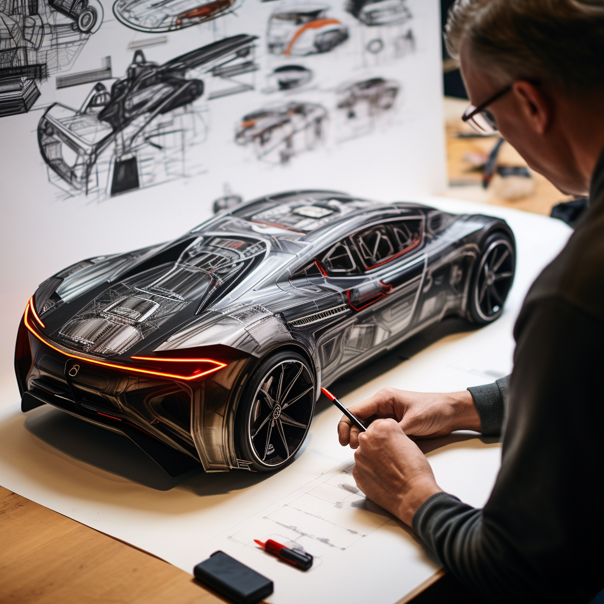

The future of transportation is rapidly evolving, with innovative technologies and groundbreaking concepts emerging to address the pressing need for fuel-efficient vehicles. As concerns over climate change and dwindling fossil fuel reserves persist, automakers are pushing the boundaries of engineering to create a greener, more sustainable mobility landscape. In this article, we will delve into the futuristic advancements and revolutionary vehicles that are set to revolutionize the economy vehicle industry and shape a cleaner future.
The Final Frontier
Hydrogen fuel cell vehicles (FCVs) are another promising solution for sustainable transportation. These vehicles use hydrogen gas to generate electricity, emitting only water vapor as a byproduct. Advances in fuel cell technology are enhancing efficiency and reducing costs, making FCVs more commercially viable. With improved infrastructure for hydrogen production and distribution, FCVs have the potential to become a mainstream option in the future, offering long driving ranges and quick refueling times.
The dreams of yesterday are the hopes of today and the reality of tomorrow. Science has not yet mastered prophecy. We predict too much for the next year and yet far too little for the next ten.
Future economy vehicles will incorporate cutting-edge lightweight materials to enhance fuel efficiency without compromising safety or performance. Carbon fiber composites, advanced polymers, and ultra-high-strength steel alloys will be extensively used to reduce vehicle weight, thereby requiring less energy to propel. These materials will be seamlessly integrated into vehicle structures, offering a perfect balance of strength, rigidity, and weight reduction, ultimately boosting fuel economy..
Reaching for the Stars
 To go places and do things that have never been done before – that’s what living is all about.The vehicles of the future will harness energy from various sources to power their operations. Kinetic energy recovery systems will capture and store energy generated during braking and deceleration, subsequently using it to assist acceleration and reduce reliance on conventional fuel sources. Solar panels integrated into vehicle surfaces will capture sunlight and convert it into electricity, further extending the driving range of electric and hybrid vehicles. Harvesting energy from sources within the vehicle's environment will contribute to a more sustainable and energy-efficient transportation ecosystem.
· Images by f1
{kind=link}